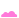
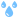

Diagnostics#
The diagnostics panel contains options for visualising various elements of the simulation. This aids in understanding and adjusting particle, mesh, and force behaviors within the scene.
Toggles the diagnostics settings panel, adding or removing it on the right side of the viewport.
{kind=link}
Liquid#
This tab deals with the visualization of different properties of the liquid.
- Liquid Mesh: Show or hide the liquid mesh in the viewport. Show or hide the visualization settings for the liquid mesh in the diagnostics panel.
Realistic: Utilize the standard shading established within the node graph.
Field Shading:
- Non-refractive shading colored to display certain liquid attributes.
Main Liquid:
- Show information about the main liquid.
Triangles:
Clearly shows all the polygons of the liquid mesh.
If you see big triangles from the desired camera distance, you might want to increase the mesh resolution by lowering the Voxel size parameter in the
 Simulation node to get a more detailed and smooth liquid mesh. If the mesh looks like a colored noise from the desired camera distance because the triangles are so small, you might want to increase your voxel size to gain performance.
Simulation node to get a more detailed and smooth liquid mesh. If the mesh looks like a colored noise from the desired camera distance because the triangles are so small, you might want to increase your voxel size to gain performance.
Whitewater:
- Show information about whitewater.
Trapped Air:
Displays what parts of the liquid are considered trapped air (this is where bubbles can spawn).
Trapped air is indicated with yellow and transitions from cyan to purple for non-trapped air.
This visualization is used in combination with the Trapped air: Range and Trapped air: Max Depth parameter in the Source tab of the

Whitewater node to define where the bubbles may spawn. * Wave Crests:Displays what parts of the liquid are considered wave crests (this is where foam particles can spawn).
Wave crests are indicated with yellow and transition from cyan to purple for parts that aren’t considered as wave crests.
This visualization is used in combination with the Wave crest: Range parameter in the Source tab of the Whitewater node to define where foam may spawn.
Show Normals: Show normal indicator lines for every vertex. The colors represent the direction of the normal.
Red indicates the normal is pointing in the X or -X direction, green indicates Y or -Y, and blue indicates Z or -Z.
The colors are blended for directions between axes. For example, a normal pointing between the X and Z axes appears purple. Showing normals helps with seeing the smoothness or any issues with the mesh.
- For example, it’s useful when tweaking the SDF smoothing parameter in the Mesh tab of the Simulation node!
Size: Display size (length) of the normal indicator lines.
- Liquid Particles: Show or hide the liquid particles in the viewport. Show or hide the visualization settings for the liquid particles in the diagnostics panel. You may want to turn Liquid Mesh off to better see the particles. For more information on what liquid particles are please check our Getting Started With LiquiGen Simulation section!
Sizing: Voxels will render the particles as shaded spheres with their size based on the voxel size. Pixels will render the particles as non-shaded squares with their size based on the pixel size of your monitor.
Size: Display size of the particles in the viewport. When using Voxels as sizing, 3 means the width of a particle is 3 voxels. When using Pixels as sizing, 3 means the width of a particle is 3 pixels.
{kind=link}
{kind=link}
{kind=link}
Realistic:
Renders the particles as spheres using the liquids Albedo color.
Field Shading:
- Renders the particles as spheres colored to display certain particle attributes.
Unique ID:
Colors are mapped based on the particle ID which is a new integer number that is assigned to each particle when spawned.
Each number is only used once per simulation, so died or drained particles still count when setting up a good remap range!
Velocity:
Colors are mapped based on the particle speed.
Stickiness:
Colors are mapped based on the stickiness of the particles. Stickiness is set using the Stickiness parameter found in the Behaviour tab of the

Emitter node.
Age:
Colors are mapped based on the particle age. The age starts counting in seconds from the moment a particle is spawned. You can see the current time in seconds in the timeline editor next to the frame count for reference. The amount in seconds is the amount of frames (or simulation steps) divided by the step rate which is setup in the Simulation tab of the
Simulation node. This option is only available when the Simulate particle lifetime parameter in the Lifetime tab of the Simulation node is checked!
Viscosity:
Colors are mapped based on the viscosity of the particles. Viscosity is set using the Dynamic viscosity coefficient parameter found in the Behaviour tab of the Emitter node. This option is only available when the Simulate viscosity parameter in the Viscosity tab of the
Simulation node is checked!
The Color Gradient assigns color values based on the selected Field Shading method (Unique ID, Velocity, or Age). Color values are assigned from low values on the left to high values on the right. Each Field Shading method stores its own color gradient settings. For more information on how to use color gradients, please have a look at our Color: Gradient section!
Remap Range: This range slider sets up the value range between which the gradient colors will be mapped. For the most informative results, the minimum value is kept at 0 and the maximum value is set to the number of particles (found in the Stats panel under the
 View dropdown menu) for Unique ID, to the highest particle speed in m/s for Velocity, and to the highest particle age in seconds for Age. For more information on how to use range sliders, please have a look at our Range Slider section!
View dropdown menu) for Unique ID, to the highest particle speed in m/s for Velocity, and to the highest particle age in seconds for Age. For more information on how to use range sliders, please have a look at our Range Slider section!
 Whitewater Particles: Show or hide the whitewater particles in the viewport.
Whitewater Particles: Show or hide the whitewater particles in the viewport.
{kind=link}
Models#
This tab deals with the visualization of imported models.
Show SDF: If checked, the SDF of the imported model will be shown instead of the polygon rendering. The SDF (sine distance field) is the voxelized version of the model LiquiGen uses for the simulation. It can be useful to preview this as you can see if the model is properly represented in the simulation. If not, you can lower the absolute voxel size or increase the relative resolution in the Asset tab of the
 Import node.
Import node.
Forces#
This tab deals with the visualization of any forces created by  Force nodes in the scene.
Force nodes in the scene.
The Forces section selects which forces are displayed.
The Transform section sets the dimensions and position of the visualization box in which the force velocities are displayed.
The View section sets how the arrows are placed within the visualization box.
The Arrow section sets how the arrows are displayed.
Forces:
List of all forces. Select a force from the list to display it in the viewport. Multiple forces can be displayed simultaneously with arrows indicating the direction of the combined velocities. Use the Select All checkbox to select or deselect all forces at once. The search box filters the list to only display forces with names containing the search term. To prevent forces from appearing in the visualization when their nodes are disconnected or disabled, enable the Ignore disabled forces checkbox.
{kind=link}
- View:
- Visual mode:
2D: One layer of arrows is visible on a plane (slice). This can give clearer visualization of a force as the arrows don’t overlap as they do in a 3D grid. With this mode selected, the Slice parameters appear on the bottom of the diagnostics panel to specify the axis and position of the plane.
3D: A grid of arrows is visible pointing in the velocity directions in 3D-space. This can give clearer visualization of the velocity orientations.
Sparsity: Density of visualization arrows. X1 means each voxel has an arrow, X8 means every eighth voxel has an arrow.
Hide Empty: If checked, arrows are only shown within the simulation tiles. This can give clearer visualization as the force velocities are only shown around the liquid.
- Arrow:
Type: Pick between
 2D arrows made up of thin lines and 3D arrows made up of 3D shapes. The latter reveals the Thickness parameter below.
2D arrows made up of thin lines and 3D arrows made up of 3D shapes. The latter reveals the Thickness parameter below.- Source: Color source of the arrows.
Constant: Sets the color of all arrows to a light blue.
Direction: Sets the arrow color based on its direction. The colors are mapped like a color wheel from red in the X axis, green in the Y axis, cyan in the -X axis, to magenta in the -Y axis. Up and down goes from blue in the Z axis to yellow in the -Z axis. The color hues shift gradually between all the directions.
Value: Sets the arrow color based on a velocity range setup with the Min/Max parameter from blue in areas with a low force strenth to cyan to yellow to red in areas with a high force strength.
Normalize: A value of 1 makes all the arrows the same size, a value of 0 scales the arrows based on a velocity range setup with the Min/Max parameter.
Size: Sets the size of the arrows. Higher values mean larger arrows.
Thickness: Only shows when using the 3D arrow option. Thickness of the arrows.
Min/Max: Set the minimum and maximum velocities for mapping the arrow scale and color.
- Transform:
Position: Position of the visualization box in 3D space.
Size: Dimensions of the visualization box in all three axis.
{kind=link}
- Slice: This section appears when the Visual mode is set to 2D to specify the axis and position of the visualization slice. The slice is the tansparent grey plane containing the arrows.
Slice Axis: Specify if the slice is oriented along the X,Y, or Z axis.
Slice offset: Specify the slice position in the force visualization box. 0 means all the way at the negative side of the slice axis 1 means all the way at the positive side of the slice axis.
Velocity#
This tab deals with the visualization of the velocities of the liquid.
- View: Sets how the arrows are placed in the scene.
- Visual type:
Field: Arrows are placed in a grid.
Liquid Particles: Arrows are placed on the liquid particles.
Whitewater Particles: Arrows are placed on the whitewater particles.
- Visual mode:
2D: One layer of arrows is visible on a plane (slice). This can give clearer visualization as the arrows don’t overlap as they do in a 3D grid. With this mode selected, the Transform and Slice sections appear on the bottom of the diagnostics panel to specify the size, axis, and position of the plane.
3D: A grid of arrows is visible pointing in the velocity directions in 3D-space. This can give clearer visualization of the velocity orientations.
Sparsity: Density of visualization arrows. X1 means each voxel has an arrow, X8 means every eighth voxel has an arrow. When using Liquid Particles or Whitewater Particles as the visual type, X1 means every particle has an arrow, X512 means every 512th particle has an arrow.
- Arrow:
Type: Pick between
2D arrows made up of thin lines and 3D arrows made up of 3D shapes. The latter reveals the Thickness parameter below.- Source: Color source of the arrows.
Constant:
Sets the color of all arrows to a light blue.
Direction:
Sets the arrow color based on its direction. The colors are mapped like a color wheel from red in the X axis, green in the Y axis, cyan in the -X axis, to magenta in the -Y axis. Up and down goes from blue in the Z axis to yellow in the -Z axis. The color hues shift gradually between all the directions.
Value:
Sets the arrow color based on a velocity range setup with the Min/Max parameter from blue in areas with low velocity to cyan to yellow to red in areas with high velocity.
Normalize: A value of 1 makes all the arrows the same size, a value of 0 scales the arrows based on a velocity range setup with the Min/Max parameter.
Size: Sets the size of the arrows. Higher values mean larger arrows.
Thickness: Only shows when using the 3D arrow option. Thickness of the arrows.
Min/Max: Set the minimum and maximum velocities for mapping the arrow scale and color.
The following sections appear when the Visual mode is set to 2D to specify the axis, size, and position of the visualization slice. The slice is the tansparent grey plane containing the arrows.
- Transform:
Position: Position of the visualization box in 3D space.
Size: Dimensions of the visualization box in all three axis.
- Slice: This section appears when the Visual mode is set to 2D to specify the axis and position of the visualization slice. The slice is the tansparent grey plane containing the arrows.
Slice Axis: Specify if the slice is oriented along the X,Y, or Z axis.
Slice offset: Specify the slice position in the velocity visualization box. 0 means all the way at the negative side of the slice axis 1 means all the way at the positive side of the slice axis.
Domain#
This tab deals with displaying the area where the simulation takes place.
Bounding Box: Shows a purple wireframe box displaying the smallest box to fit around all active voxels. It is similar to the bounding box you see with non-sparse solvers but here, the box shrinks and grows based on the simulation and the empty space within it doesn’t take computer resources.
- Tiles: A tile is a box of 8 voxels cubed. The simulation takes place within the tiles.
Main Liquid: Shows the simulation tiles for the liquid particles as green wireframe boxes.
Whitewater: Shows the simulation tiles for the whitewater particles as white wireframe boxes.